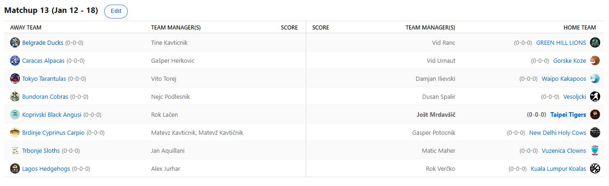

SEZONA 25/26
- Pravila in sistem tekmovanja
- Matchup1 (Oct 21 - Oct 26)
- Matchup2 (Oct 27 - Nov 2)
- Matchup3 (Nov 3 - Nov 9)
- Matchup4 (Nov 10 - Nov 16)
- Matchup5 (Nov 17 - Nov 23)
- Matchup6 (Nov 24 - Nov 30)
- Matchup7 (Dec 1 - Dec 7)
- Matchup8 (Dec 8 - Dec 14)
- Matchup9 (Dec 15 - Dec 21)
- Matchup10 (Dec 22 - Jan 28)
- Matchup11 (Dec 29 - Jan 4)
- Matchup12 (Jan 5 - Jan 11)
- Matchup13 (Jan 12 - Jan 18)
- Matchup14 (Jan 19 - Jan 25)
- Matchup15 (Jan 26 - Feb 1)
- Play-in (Feb 2 - Feb 22)
- Playoff 1 (Feb 23 - Mar 8)
- Playoff 2 (Mar 9 - Mar 22)
- Playoff 3 (Mar 23 - Apr 5)
2025/26 - Fantasy Koroška - sezona 9
MATCHUP 13 (Jan 12 - Jan 18)
Recap: MATCHUP 13
Za nekatere (beri: Matona) nesrečni 13. teden se je zaključil in dva kroga pred koncem se od njega in njegovih upov po končnici poslavljamo.
Ko se za večino zadeva šele zares začenja, pa Mato že pakira kovčke in da je zadeva še toliko slabša, je danes v Cancunu celo oblačno. 14. teden
odpiramo zahvaljujoč Martinu Luthru Kingu že zelo zgodaj in že se veselimo bojev tudi v predzadnjem delu rednega dela.
Po sistemu tiste znane balkanske »samo pijan mogu da prebolim« bi Matevž tole sramoto najbrž z veseljem utopil v alkoholu, a ko ima hudič mlade jih ima veliko
in Matac bo moral zaradi suhega januarja na tak podvig počakati še vsaj 12 dni. Uradno je namreč odpeljal vlak za njegovo uvrstitev v
končnico in tisti majhen »e« ob pogledu na lestvico lige ob imenu in številki #16 bo najbrž vsaj do oktobra zaprl usta našemu sicer zelo
zgovornemu trash-talkerju. Že se šušlja, da bo prišlo v prihodnji sezoni do korenitih sprememb in omenja se celo nova maskota – Orel …
saj veste, po pivu, ki ga dobimo na piknik. Free win in zadnji žebelj v njegovo krsto je z veseljem zabil Geps in ga ob tem še boleče
zbodel z memom tedna. S tem je tudi svoje Svete Krave popeljal v končnico, kar je bilo tekom sezone ves čas pod vprašajem in Gašper je
lahko zadovoljen, da mu v zadnjih dveh krogih ne bo treba skrbeti za to. Sproščeno lahko poskusi izboljšati izhodišče, preden ga čaka
izjemno težka naloga že v playinu, a vsaj minimalni standard za sezono je izpolnjen in takšne ekipe, ki sproščeno napadajo so vedno lahko nevarne.
Drugi manager s sezono za pozabo pa je Dule. Zgolj 5% možnosti mu še pripisujejo algoritmi, čeprav bi sam ocenil, da so bolj nekje pri 20-25%. Pa vendarle,
Dule se najbrž ne bo vdal vse do zadnjega, čeprav na trenutke izgleda kot da je že obupal. Cicko mu je namreč ta teden ponudil prst,
a namesto da bi zgrabil roko, se ni dotikal FA marketa in na koncu zabeležil še 11. poraz. Cici, ki še naprej ne pozna poraza je ta teden
vendarle okusil tudi nekaj začasnih izostankov (težko bi jim rekli poškodbe), pa tudi švasanja svojih varovancev. Ravno v pravem trenutku
prihajajo v »formo« :D Špalir pa je vsaj z banano Trobeju nekoliko zacelil rane, ki jih pušča fantasy.
Iz zanesljivih virov smo izvedeli, da se je ta teden Rok Lačen vsak večer zbujal ponoči, ob tem pa tudi glasno kričal »BRICE PA NE SPET PRNEST 50 NO«.
Očitno je g. Sensabaugh pustil globoke rane, ki bodo še kar nekaj časa povzročale nočne more našemu Vokiju. V izjemno napetem neposrednem
obračunu za top3 je namreč potegnil krajši konec proti Joletu. Slednji je v seriji šestih zaporednih zmag in v izjemnem ritmu
pričakuje novega tekmeca v boju za 3. seed – Kupsa. Vsekakor se lahko ob morebitnem porazu Tigrov v boj za 3. mesto vrne tudi
Lačenovski in z napetostjo bomo spremljali, kateri izmed managerjev se bo pozicioniral na, vsaj na papirju lažjo stran bracketa.
Tinki Binki je sicer izgubil A-JE-TO derbi proti bestiču Ranacu, a na drugi strani z neverjetnim metom ob zvoku sirene 10 sekund pred koncem tekme s tako
imenovanim DAGGERJEM pokopal upe KK Koroške in pahnil v delirij mnogoštevilčne navijače KK2390. Če je že moral izbirati kateri matchup zmagati,
je vsekakor izbral pravega. Ranko, ki se edini lahko »pohvali« s tem, da je izgubil proti Matonu, kar je v tej sezoni vsekakor svojevrsten
dosežek, pa je s tem KONČNO prekinil črn niz kar 6 zaporednih porazov. Je ravno ob pravem času ponovno obrnil krivuljo rezultatov navzgor,
ali pa je bila to ena in edina lastovka, ki na Zelen breg ne bo prinesla pomladi?
Hud blowout smo videli v po navadi sicer tako ali drugače zelo zanimivem obračunu med Fredom in Verattijem. Slednji še naprej nikakor ne najde prave forme in
čeprav minimalne, še vedno obstajajo možnosti, da bo to katastrofalno sezono zaključil že v rednem delu. Tole je bil še 9. poraz za aktualnega
prvaka in kljub nekaj povratnikom kot npr. Sabonisom, Verčko še naprej v bot5 po točkah. Fred na drugi strani je prvič letos zabeležil
najboljši score in aktualni bonusquetion provider je preden se začne zares očitno ujel pravo formo. Bo kalkuliral za pozicije na lestvici
in pustil Dušanu zmago, ter s tem v kanal pahnil Verčka?
Satanistični obračun med Kupsom in Maherjem je minil brez izgredov. Kups je namreč stvari na svoje mesto postavil že takoj na začetku tedna in Matic se je kaj kmalu predal.
Jan bo zdaj, po katastrofalnem štartu 0-4 zdaj proti Joletu celo lovil tretje mesto. Neposrednega dvoboja teh dveh tekmecev se nismo
tako veselili že vse od časov, ko sta tekmovala za glavnega čilatorja Rožne Doline. Tedaj je zmagal Kups, zdaj pa ne bo.
Joleta smo povprašali o tem dvoboju in rekel je, da resno razmišlja o menjavi profilke in/ali logotipa za ta teden. Že je namreč
našel čudovito sliko jabolka. Če kdo v vas verjame pol toliko kot Matic Maher verjame v Lonza Balla, vam ne gre slabo.
Neverjetna ljubezen je to in Matic, ki bo neposredno odločal o zadnjem potniku v playoff, bo očitno tistih kombiniranih 20 točk,
ki mu jih je prinesel v decembru z veseljem podpisal tudi za januar. LOL.
Že smo pri predzadnjem obračunu tega maratonskega recapa in naj ta odstavek začnemo z opravičilom Herku, saj smo prejšnji teden nepravilno navedli,
da je vedno v sredini lestvice. Kaj kmalu smo preko odvetnika prejeli pritožbo, blatenje imena itd itd. Oprosti Gašper. Sredina
lestvica je zate prenizko in žaljivo mesto, ti si zaslužiš višje. Kakorkoli, tole jezo je učinkovito prenesel na svoje varovance
na košarkarskem terenu in zanesljiva zmaga proti Gorskim Kozam je tu. Vidov zmagoviti niz je vendarle prekinjen, za nameček pa je
»počelo« tudi z vnetji in bolečinami v kolenu pri njegovem prvem igralcu, Kawhiju. Se je pa Uras vsaj naučil kaj je stavniški
handicap in naslednjič, ko bodo naši zaostajali proti rokometnim eksotom Švicarjem, bo lahko oplemenitil svoja finančna sredstva.
Zadnji dvoboj je v potekal med slavljencem Vitom (vse najboljše <3) in Ilievskim. Tale mini KKD dvoboj je dobil Torres, ki zdaj potrebuje le še eno zmago
in priboril si bo fantasy-free februar. Je to sploh prednost ali ne, je seveda še vedno up for debate, a Vito bo v svoji drugi sezoni vsekakor z
veseljem podpisal, da je brez boja uvrščen vsaj med najboljših 8 ekip. Na drugi strani je Damjan s svojimi (tudi ko sem se zatipkal in napisal sovjimi
je bilo pravilno haha) Kakapoji na meme scoru six-seven in zadnja dva kroga bo pričakal na 9. mestu. Se bo na njih kakšen favorit opekel kot na njegovih pekočih omakah?
1238 besed dolg recap sklepamo z napovedjo predzadnjega kroga – vsekakor bo zanimiv četveroboj za 3. mesto med Angusi, Tigersi, Slothsi in Alpakami,
z napetostjo bomo spremljali tudi kvoto 20, ki jo trenutno stavnice ponujajo, da se v playoffe uvrsti Dule. Za začetek potrebuje poraz Koal in
svojo zmago proti odpisanim Krapom, pomagala bi tudi zmaga Svetih Krav. Ostali matchupi ta teden ne obetajo kaj preveč, bo pa zanimiv današnji
fantasy dan tudi z vidika predictionov, ko bo točkovno najdonosnejši bonus question o MLK dayu vsekakor lahko poskrbel za velike spremembe na lestvici.
Omenimo naj še, da sta bila Matevžu že pripisana 2% možnosti za 1. pick na draftu prihodnje leto – zaradi neuvrstitve v playoff namreč.
Srečno vsem in ne pozabite na predictione – danes jih je treba oddati do 19.00.
Best memes